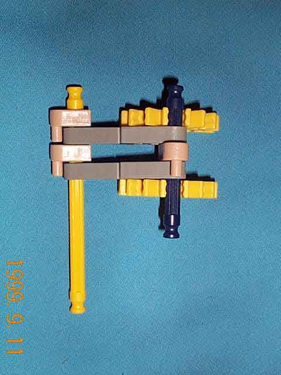
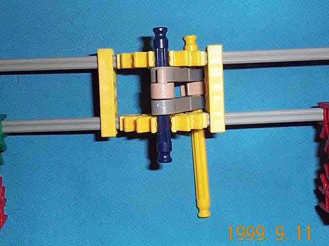
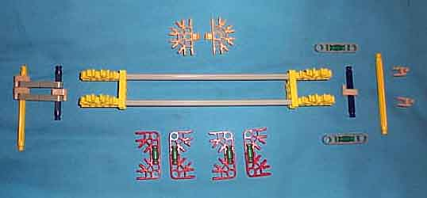

The bit assembly is analogous to the Digi-Comp I's flip-flop. There is one bit assembly for each bit of state.
In the knex (tm) model, each bit is implemented by an assembly of gray struts and yellow (arity 5) connectors. The assembly is hung from an inverted pendulum formed from a pair of arms constructed from two gray (arity 1) connectors coupled together by a green strut. The inverted pendulum ensures that the bit assembly will rest in either of the two extreme positions of its motion and is not stable anywhere in between. This provides hysteresis, which is necessary in all digital logic systems.
 Each of the pictures above shows one inverted pendulum (viewed from above) of a bit asembly. The yellow strut is the part of the bitframe on which the pendulum is anchored.
The yellow (arity 5) connectors which are parallel to the yellow mounting strut, in addition to holding gray struts of the bit assembly together, also serve to stop the inverted pendulum from swinging too far to either side. That is why they are slid up against the inverted pendulum assembly instead of being anywhere along the bit assembly.
The programming hardware is mounted on the bit assembly. Each bit assembly has one set of programming hardware for each control stage.
The bit state indicator is attatched at one end of the bit assembly, in such a way that they are obstructed by the bit state mask
